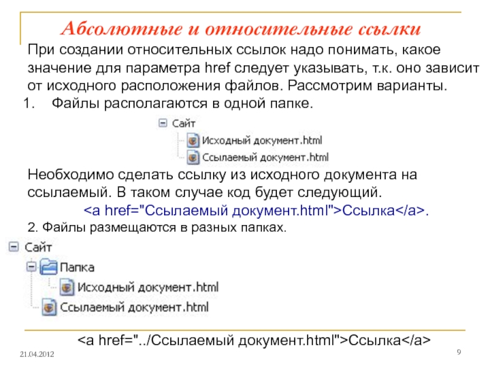
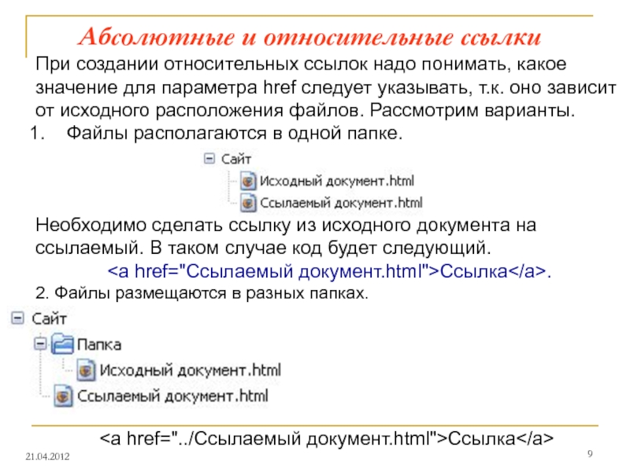

На сегодняшний день не многие автовладельцы знают, что такое Автоателье, а также некоторые и не догадываются о их существовании. Автоателье начали появляться в начале 90-х годов во время возникновения рыночных отношений и при начинающемся росте автомобильного парка у граждан нашей страны, правда тогда они назывались намного проще - Перетяжка салона или Пошив авточехлов. На нынешнем автомобильном рынке под названием автоателье выступают компании которые занимаются не только интерьером салонов автомобилей (например как мы), но и мастерские работающие по изменению экстерьера автомобиля, фирмы устанавливающие стерео и видео системы, автосервисы по детейлингу автомобилей. Но согласитесь, что само словосочетание - АвтоАтелье говорит о том, что данная компания которая выступает под этим названием занимается именно пошивом салонов для автомобиля, а также другими работами, например:
 

Исходя из вышеперечисленного мы с уверенностью можем сказать, что мастерские занимающиеся пошивом и перетяжкой это и есть автоателье!
HazZART